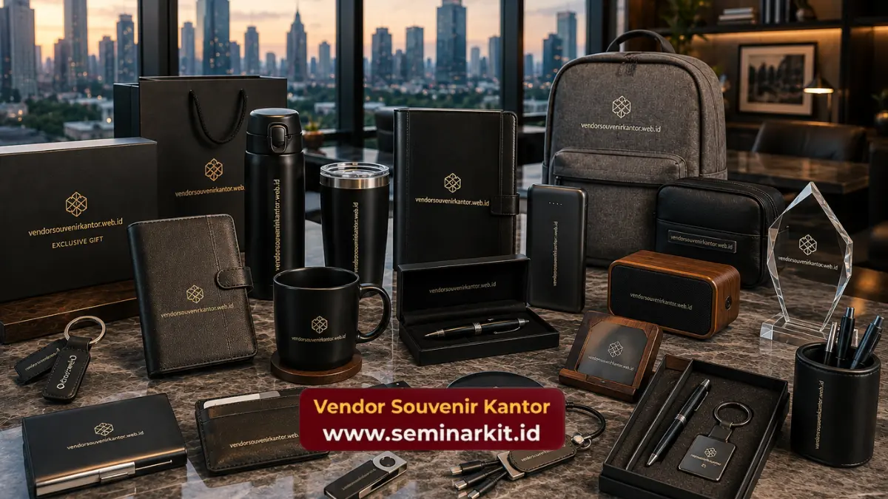

Souvenir kantor custom logo budget 50 ribu adalah merchandise perusahaan yang dicetak dengan identitas visual brand, seperti logo dan warna korporat, pada produk dengan harga satuan sekitar lima puluh ribu rupiah.
Kombinasi ini memungkinkan perusahaan tetap menjaga konsistensi branding meski menggunakan anggaran yang terukur.
Teknik custom logo yang dipilih turut memengaruhi hasil akhir tampilan produk, mulai dari sablon, bordir, hingga ukir laser.
- Custom logo pada souvenir kantor berfungsi sebagai media branding pasif yang berkelanjutan.
- Teknik cetak logo yang umum digunakan meliputi sablon, bordir, dan ukir laser, tergantung jenis bahan produk.
- Konsistensi warna dan proporsi logo penting untuk menjaga citra profesional perusahaan.
- Budget 50 ribu umumnya masih dapat mengakomodasi proses custom logo pada berbagai jenis produk merchandise.
Apa Manfaat Custom Logo pada Souvenir Kantor Budget 50 Ribu?
Custom logo pada souvenir kantor bermanfaat untuk memperkuat pengenalan brand perusahaan setiap kali produk tersebut digunakan oleh karyawan, klien, maupun mitra bisnis.
Ketika logo perusahaan tercetak secara konsisten pada berbagai jenis merchandise, penerima souvenir akan lebih mudah mengasosiasikan produk tersebut dengan perusahaan yang memberikannya.
Proses ini secara bertahap membangun ingatan visual atau brand recall, terutama jika souvenir digunakan dalam aktivitas sehari-hari seperti bekerja di kantor.
Selain itu, custom logo pada souvenir juga menunjukkan tingkat profesionalisme perusahaan dalam mempersiapkan sebuah acara, karena detail kecil seperti kerapian cetak logo turut mencerminkan standar kualitas perusahaan secara keseluruhan.
Apa saja teknik pembuatan logo kustom yang dapat dilakukan dengan anggaran 50 ribu?
Beberapa teknik custom logo yang umum digunakan pada souvenir kantor budget 50 ribu meliputi sablon, bordir, hot stamping, dan ukir laser, tergantung jenis bahan produk yang dipilih.
Sablon untuk Produk Berbahan Kain dan Plastik
Sablon merupakan teknik yang umum digunakan pada produk seperti tumbler plastik, totebag, atau bagian tertentu pada notebook.
Teknik ini relatif efisien dari segi biaya untuk pemesanan dalam jumlah menengah hingga besar.
Bordir untuk Produk Berbahan Kain
Bordir lebih sering digunakan pada produk seperti pouch atau aksesori berbahan kain karena memberikan hasil akhir yang lebih tahan lama dan bertekstur dibandingkan sablon biasa.
Ukir Laser untuk Produk Berbahan Keras
Ukir laser umumnya digunakan pada produk seperti gantungan kunci metal atau bagian tertentu pada power bank, karena mampu menghasilkan detail logo yang presisi meski pada area cetak yang terbatas.
Mengapa Konsistensi Desain Logo Penting bagi Branding Perusahaan?
Konsistensi desain logo penting karena membantu perusahaan membangun identitas visual yang mudah dikenali di berbagai media, termasuk pada souvenir kantor yang dibagikan kepada karyawan maupun klien.
Ketidakkonsistenan warna, proporsi, atau posisi logo pada berbagai jenis souvenir dapat mengurangi kesan profesional perusahaan, bahkan berpotensi membingungkan penerima terkait identitas brand yang sebenarnya.
Oleh karena itu, penyesuaian ukuran dan posisi logo pada setiap jenis produk perlu diperhatikan secara cermat sebelum proses produksi dimulai.
Bagi perusahaan yang membutuhkan pendampingan dalam penyesuaian desain logo pada souvenir kantor budget 50 ribu, tim vendorsouvenirkantor.web.id dapat membantu memastikan hasil cetak logo tetap proporsional dan sesuai standar identitas visual perusahaan Anda.

Bagaimana Memastikan Hasil Custom Logo Tetap Rapi pada Souvenir Budget 50 Ribu?
Hasil custom logo dapat tetap rapi pada souvenir budget 50 ribu apabila ukuran, posisi, dan resolusi file logo disesuaikan dengan area cetak pada masing-masing jenis produk sebelum proses produksi dimulai.
File logo dengan resolusi rendah atau detail yang terlalu rumit berpotensi menghasilkan cetakan yang kurang jelas, terutama pada produk dengan area cetak berukuran kecil seperti gantungan kunci atau pulpen.
Oleh karena itu, penyederhanaan elemen desain logo pada media cetak berukuran kecil menjadi langkah yang penting dilakukan tanpa menghilangkan elemen utama identitas brand perusahaan.
Selain itu, pengecekan proof atau contoh hasil cetak sebelum produksi massal juga dapat membantu memastikan warna dan proporsi logo sudah sesuai dengan standar identitas visual perusahaan, sehingga meminimalkan risiko kesalahan pada hasil akhir produksi dalam jumlah besar.
Apa Saja Faktor yang Memengaruhi Biaya Custom Logo pada Souvenir Kantor?
Biaya pembuatan logo kustom untuk souvenir kantor dipengaruhi oleh beberapa faktor, termasuk teknik pencetakan yang diterapkan, jumlah warna dalam desain logo, serta jumlah titik pencetakan pada produk.
Semakin kompleks teknik cetak yang digunakan, misalnya kombinasi bordir dengan aplikasi bahan tambahan, umumnya biaya produksi juga akan menyesuaikan tingkat kerumitan tersebut.
Begitu pula dengan jumlah warna pada desain logo, di mana desain dengan warna lebih sederhana cenderung lebih efisien dari sisi biaya dibandingkan desain dengan gradasi warna yang kompleks.
Dengan memahami faktor-faktor ini, perusahaan dapat menyesuaikan desain logo agar tetap sesuai dengan budget 50 ribu tanpa mengorbankan kualitas dan kejelasan identitas brand pada produk akhir.
Kesimpulan
Souvenir kantor custom logo budget 50 ribu memberikan peluang bagi perusahaan untuk tetap menjaga konsistensi branding tanpa mengorbankan efisiensi anggaran.
Pemilihan teknik custom logo yang tepat, seperti sablon, bordir, atau ukir laser, turut menentukan hasil akhir tampilan produk yang profesional.
Jika perusahaan Anda membutuhkan souvenir kantor custom logo dengan budget 50 ribu yang rapi dan konsisten dengan identitas brand, kunjungi vendorsouvenirkantor.web.id untuk konsultasi desain dan estimasi produksi.

Banner promosi: klik gambar untuk langsung terhubung ke WhatsApp tim sales.